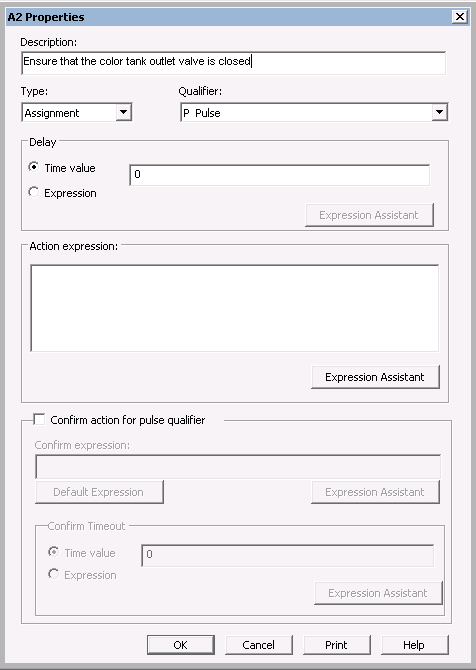
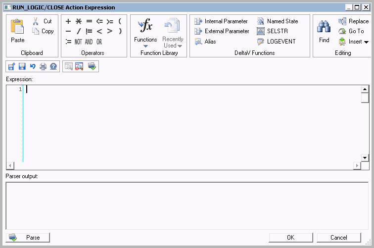

Modify and add an action to the FILL running logic
- Double-click the step.
- In the S1 Properties dialog, enter the step description: Close outlet.
- Rename the step to CLOSE_OUTLET. (Click S1 in the step box to rename it.)
- With the CLOSE_OUTLET step box selected, select and right-click Step Actions View.
- Select Add to add an action. The Action Properties dialog opens.
-
Enter the description (optional) as "Ensure that the color tank
outlet valve is closed," leave the
Type as
Assignment, and leave the
Qualifier as
Pulse.

-
Click
Expression Assistant to open the Expression
Editor.

-
Click
Insert Alias. Browse under
Tanks > COLOR
for the desired alias.
Note that COLOR_OUT_VLV may appear in the Browse list as both a module block () and a simple alias (). Double-clicking the module block lets you browse to the module parameter for VALVE_SP, whereas selecting the simple alias allows no further browsing. The first part of the expression should be defined as shown in the following:
'//#COLOR_OUT_VLV#/VALVE_SP'
- Next, click the Assignment button or type := .
-
Then, click
Insert Named State. In the
Browse dialog, select the valve setpoint named
state (vlvnc-sp) and the state of CLOSE.
The completed expression now appears in the Expression Editor:
'//#COLOR_OUT_VLV#/VALVE_SP' := 'vlvnc-sp:CLOSE'
- Click Parse to check the expression.
- If the parsing completes without errors, click OK. Otherwise, correct the expression as needed. The expression now appears in the Action Properties box.
- Click OK. The action text appears in the Step Actions View.
- Rename the step action, A1, to CLOSE_OUT_VLV.